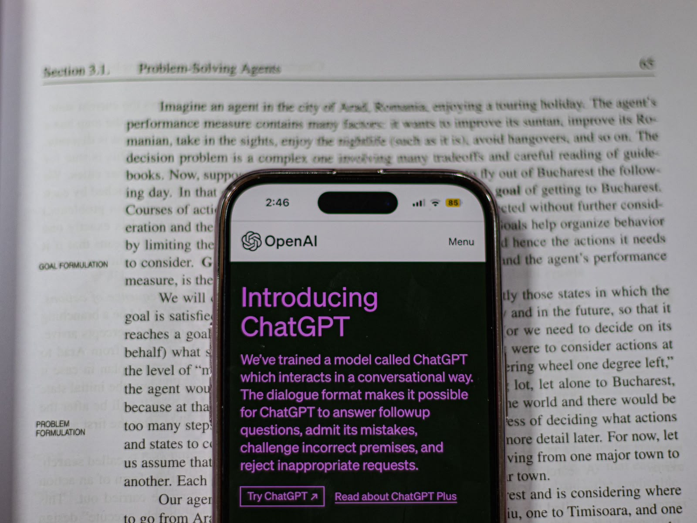

La Inteligencia Artificial se encuentra presente en numerosos aspectos de la vida cotidiana y facilita muchas actividades que realizamos diariamente.
Los teléfonos inteligentes utilizan IA para mejorar las fotografías, reconocer la voz y ofrecer recomendaciones personalizadas.
Los asistentes virtuales como Siri, Alexa y Google Assistant permiten realizar búsquedas, reproducir música y controlar dispositivos inteligentes mediante comandos de voz.
Las plataformas de entretenimiento utilizan algoritmos para recomendar películas, series y canciones de acuerdo con los gustos de cada usuario.
En las redes sociales, la IA ayuda a identificar contenido inapropiado, reconocer rostros y traducir publicaciones automáticamente.
En la medicina, se utiliza para analizar imágenes médicas, detectar enfermedades y desarrollar tratamientos más eficaces.
En la educación, permite crear plataformas adaptativas que ofrecen contenido personalizado según el ritmo de aprendizaje de cada estudiante.
En el comercio electrónico, ayuda a las empresas a conocer las preferencias de los consumidores y recomendar productos de interés.
En la agricultura, los sistemas inteligentes permiten controlar cultivos, optimizar el riego y aumentar la producción de alimentos.
La IA también está presente en la industria automotriz, los sistemas bancarios, la seguridad informática y la investigación científica.
En el ámbito del transporte, aplicaciones como Google Maps utilizan IA para analizar el tráfico y ofrecer rutas más rápidas.
Los hogares inteligentes permiten controlar luces, cámaras y electrodomésticos mediante comandos de voz.
Los chatbots y asistentes virtuales ayudan a las empresas a brindar atención al cliente las 24 horas del día.
Gracias a todos estos avances, la Inteligencia Artificial se ha convertido en una herramienta fundamental para la sociedad moderna y continúa transformando la manera en que vivimos.